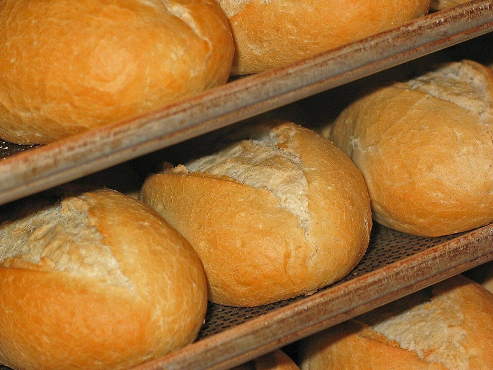
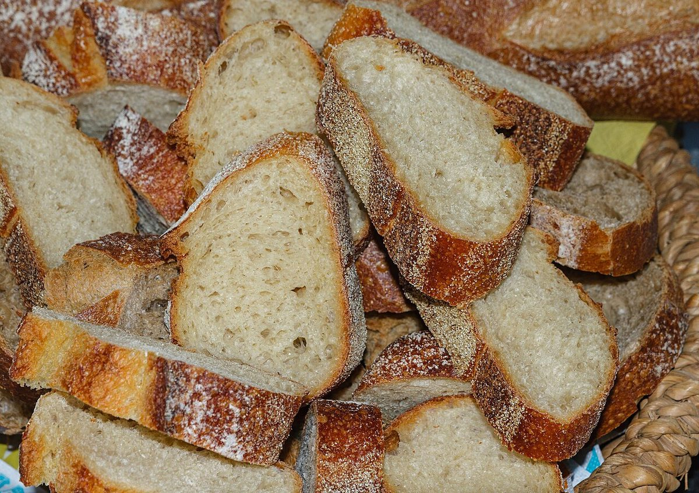

メニュー
メニュー
メニュー・価格は準備中です。確認でき次第ここに載せます。
下のコマの写真はすべてイメージで、お店の商品ではありません。吹き出しの名前も、枠のための仮の呼び名です。
 1お品書きその1準備中
1お品書きその1準備中 2お品書きその2準備中
2お品書きその2準備中
3お品書きその3準備中 4お品書きその4準備中
4お品書きその4準備中 5お品書きその5準備中
5お品書きその5準備中
6お品書きその6準備中 7お品書きその7準備中
7お品書きその7準備中
お品書きの内容・価格・取り扱い商品は、お店の情報をいただいてから掲載します。
メニュー
メニュー・価格は準備中です。確認でき次第ここに載せます。
下のコマの写真はすべてイメージで、お店の商品ではありません。吹き出しの名前も、枠のための仮の呼び名です。


お品書きの内容・価格・取り扱い商品は、お店の情報をいただいてから掲載します。